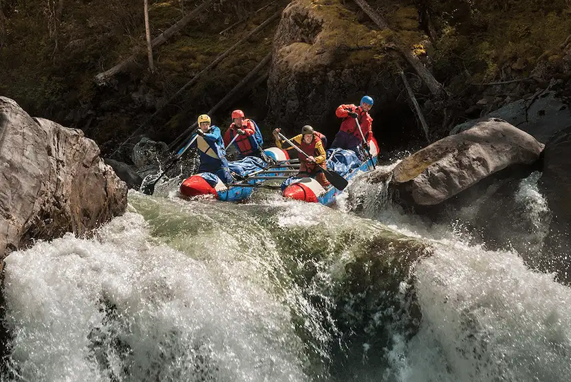
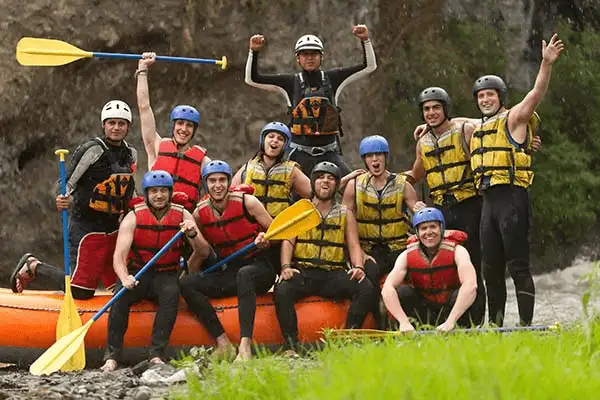
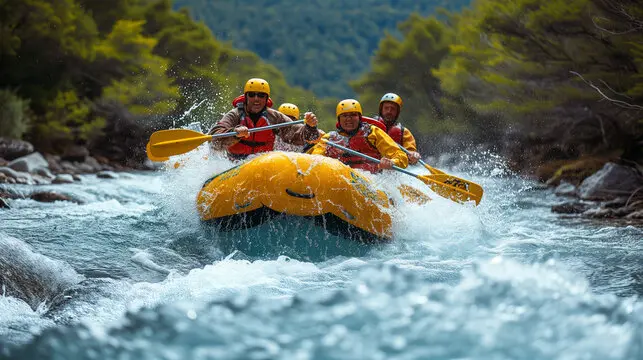

Get ready for the adventure of a lifetime with Torrent Trail Rafting! Whether you're a thrill-seeker craving heart-pounding rapids or a nature lover looking to explore stunning river canyons, we’ve got the perfect ride for you. Our expert guides ensure a safe and unforgettable journey through breathtaking scenery and wild, splashing fun. From family-friendly floats to high-adrenaline white water challenges, Torrent Trail Rafting delivers excitement for all skill levels. Come ride the rapids and make memories that will last a lifetime!


Torrent Trail Rafting
Torrent Trail Rafting was founded in 1998 by a group of passionate river guides who shared a love for adventure and the great outdoors. With a vision to create unforgettable white water experiences, they scouted some of the most thrilling and scenic river routes in the region and established their home base near the roaring forks of the Clearwater River. What started as a modest operation with just two rafts and a rusty old van quickly gained popularity among thrill-seekers and nature lovers alike. Their commitment to safety, storytelling, and sustainable tourism helped build a loyal following, making Torrent Trail Rafting a respected name in the rafting community.
History 
Over the years, the company expanded its operations to include a variety of trips for all skill levels—from beginner-friendly half-day floats to multi-day expeditions through remote wilderness canyons. Torrent Trail Rafting became known not only for its heart-pounding rapids but also for its deep respect for the environment and local heritage. The company actively partners with conservation groups and local tribes to preserve the natural beauty and cultural history of the rivers they navigate. Today, Torrent Trail Rafting continues to blend adrenaline, education, and eco-consciousness into every trip, earning it a reputation as one of the top adventure outfitters in the region.